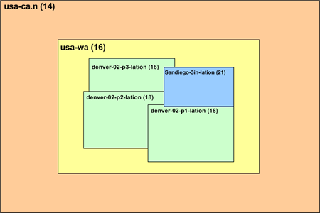
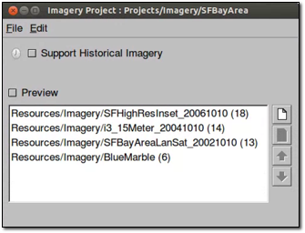
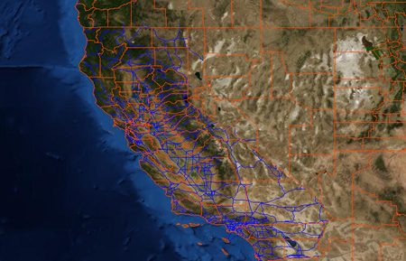

Defining and Building Projects¶
The following exercises guide you through defining and building imagery, terrain, and vector projects using the resources you created in the previous lesson.
Define an Imagery Project
If you intend to use your own imagery data, it makes sense to define and build the imagery project before adding vector data. That way, you can use the imagery project as the base image map in the Preview pane in Google Earth Enterprise Fusion when you develop your vector project, making it easier to visualize how your vector data will appear over your actual imagery.
Add Resources to an Imagery Project
Although you can change the display order of imagery and terrain resources within a project, the order is ultimately determined by the resolution of the source files. That is, lower-resolution insets are automatically ordered below higher-resolution insets. So in reality, you can change the order of resources with the same resolution only.
The following example shows a number of imagery resources in a project ordered by resolution. The resolution of each resource appears in parentheses after the resource name.
The order in which the imagery or terrain resource data appears in the Imagery and Terrain Project Editors is the same as the stacking order of the insets in Google Earth EC. That is, higher-resolution insets appear above lower-resolution insets, so that viewing preference is given to the higher-quality imagery. The stacking order of same-resolution insets follows the order you define in the project. The following graphic illustrates this concept.

To add resources to an imagery project:
Select Asset Manager from the Tools menu. The Asset Manager appears.
Click
 on the toolbar. The Imagery
Project Editor appears.
on the toolbar. The Imagery
Project Editor appears.
Click
 . The Open dialog appears.
. The Open dialog appears.Navigate to the
ASSET_ROOT/Resources/Imageryfolder.Select BlueMarble, and click Open. The BlueMarble resource appears in the Imagery Project Editor.
Repeat steps 3 through 5 for each of the following resources:
- SFBayAreaLanSat
- i3_15Meter
- SFHighResInset
The resources appear in order by resolution, with the higher resolution imagery at the top of the list.

Select File > Save.
Navigate to the
ASSET_ROOT/Projects/Imageryfolder.Enter SFBayArea as the name of your project, and click Save. The new project appears in the Asset Manager when you select ASSET_ROOT/Projects/Imagery in the asset navigation tree.
Build an Imagery Project
As with resources, you do not have to build projects right away. You can define several projects and then build them all, or you can wait until you include them in a database and build the entire data hierarchy at the same time. However, in this lesson, you will build the imagery project right away, so you can use it as a base map in the Preview pane.
Note
It could take up to 10 minutes for the project to build. Do this exercise when you can spend some time away from your computer while the project builds.
In the Asset Manager, navigate to ASSET_ROOT/Projects/Imagery in the asset navigation tree.
Right-click SFBayArea and select Build from the context menu.
The status of the project immediately changes to Queued and then In Progress. (The status may change so rapidly that it appears to change directly to In Progress.)
As with building imagery resources, you can view the progress of the build by double-clicking the Current Version or Current State column for the project. The Version Properties dialog displays the most recent version of that project. You can expand the version tree to view the status of the build in real time by clicking the + signs.
When the status of the imagery project build is Succeeded, go on to the next exercise.
Preview an Imagery Project
You can preview an imagery project after you build it.
Note
Only bounding boxes appear in the Preview pane, not the actual imagery.
To preview an imagery project:
Double-click the name of the imagery project you built in the last exercise, SFBayArea. The Imagery Project Editor for that project opens.
Check the box next to Preview above the list of source files, and then switch to the main Google Earth Enterprise Fusion window.
Bounding boxes indicate the extents of each of the individual imagery resources. The largest bounding box is around the entire Earth, which is the BlueMarble imagery. (You might have to zoom out a bit to see it.) The other three bounding boxes are in the San Francisco Bay Area. You can zoom in to see them.
Note
The name of the project does not appear in the Preview List pane. When you close the Imagery Project Editor or uncheck the box next to Preview, the bounding boxes disappear. You can reset the view by pressing Ctrl+R.
Specify an Imagery Project as Your Base Map
When the imagery project build is done, you can specify it as your base map.
To specify an imagery project as your base map:
Select Preferences from the Edit menu. The Preferences dialog appears.
Under Background Imagery, select Imagery Project from the drop-down list.
Click
 to the right of the drop-down
list. The Open dialog appears.
to the right of the drop-down
list. The Open dialog appears.Navigate to
ASSET_ROOT/Projects/Imagery, and select SFBayArea.The full path within the tutorial asset root appears to the right of the drop-down list.
Click the OK button. The Preview pane displays the specified imagery. The specified imagery will remain the background imagery until you change it to another image or return it to the default imagery in the Preferences dialog.
Define a Terrain Project
The terrain project for this tutorial is very simple. It includes one of the resources you built in the previous lesson.
Add a Resource to a Terrain Project
The following procedure provides the steps to add resources to a terrain project.
To add resources to a terrain project:
Select Asset Manager from the Tools menu. The Asset Manager appears.
Click on the toolbar. The Terrain Project editor appears.
Click
. The Open dialog appears.Navigate to the
ASSET_ROOT/Resources/Terrainfolder.Select SFTerrain, and click Open. The SFTerrain resource appears in the Terrain Project Editor.
Check the box next to Preview.
Right-click the name of the resource, and select Zoom to Layer from the context menu.
The Preview pane zooms in to the bounding box that indicates the extent of the terrain resource.
Uncheck the box next to Preview.
Click
. The Open dialog appears.Navigate to the
ASSET_ROOT/Resources/Terrainfolder.Select WorldTopography, and click Open. The WorldTopography resource appears in the Terrain Project Editor.

- In the Terrain Project Editor, select File > Save.
- Navigate to the
ASSET_ROOT/Projects/Terrainfolder. - Enter SFTerrain as the name of your project, and click Save. The new project appears in the Asset Manager when you select ASSET_ROOT/Projects/Terrain in the asset navigation tree.
Build a Terrain Project
As with the imagery project, in this exercise, you build the terrain project right away.
In the Asset Manager, right-click SF Terrain.
Select Build from the context menu.
The status of the project immediately changes to Queued and then In Progress.
Note
It could take a while for this project to build, depending on the speed of your workstation.
When the status of the terrain project build is Succeeded, go on to the next exercise.
Define a Vector Project
The following exercises cover how to define, configure, and build a vector project using the resources you created in the previous lesson.
You spend the majority of your time in Google Earth Enterprise Fusion configuring display rules for vector projects, determining how they look in Google Earth EC. Using the data in your vector source files, you can designate specific data for a variety of display purposes, such as road labels, features lines, and icons at viewing altitudes that are most appropriate for each feature. For example:
Add Resources to a Vector Project
Before specifying the display rules for this vector project, you must add the resource you created in Defining and Building Resources.
To add resources to a vector project:
Select Asset Manager from the Tools menu. The Asset Manager appears.
Click
 on the toolbar. The Vector Project
Editor appears.
on the toolbar. The Vector Project
Editor appears.Click
. The Open dialog appears.Navigate to the
ASSET_ROOT/Resources/Vectorfolder.Select CAHighways, and click Open. The CAHighways resource appears in the Vector Project Editor.
Repeat steps 3 through 5 to add USPopulation to the project. Notice that a check box appears next to each resource/layer in the project.
Check the box next to CAHighways.
Right-click CAHighways, and select Zoom to Layer from the context menu.
The roads in the CAHighways resource appear in the Preview pane.
Check the box next to USPopulation, switch to the Preview pane, and zoom out a bit.
Since this resource contains US census data by county, the outlines of counties across the US appear in the Preview pane as well as the roads in California.

Note
The name of the project does not appear in the Preview List pane. When you close the Vector Project Editor or uncheck the boxes next to the resources, the vector data disappears. You can reset the view, if desired, by pressing Ctrl+R.
In the Vector Project Editor, click USPopulation, and click to remove the US Population resource from the project. A message prompts you to confirm the deletion.
Click the OK button. The USPopulation resource disappears.
Note
Removing the resource from the project does not delete the resource. The resource remains intact and available for use by other projects. It is simply not part of this particular project any longer.
Select File > Save.
Navigate to the
ASSET_ROOT/Projects/Vectorfolder.Enter CARoads as the name of your project, and click Save. The new project appears in the Asset Manager when you select ASSET_ROOT/Projects/Vector in the asset navigation tree.
Now you are ready to begin configuring the vector layer.
Configuring Layer Properties for a Vector Project
This exercise covers how to configure layer properties for your vector project. Layer properties determine a number of aspects of how your data appears and is accessed in Google Earth EC.
To configure layer properties:
In the Asset Manager, double-click CARoads in the
/ASSET_ROOT/Projects/Vectorfolder. The Vector Project Editor appears and displays the resource you added in the previous lesson.Right-click CAHighways, and select Layer Properties from the context menu. The Layer Properties dialog appears.
Click Off next to Initial State to change it to On. Changing the initial state to On results in the CAHighways layer being automatically checked (turned on) in Google Earth EC.
Click the blank field next to LookAt. The Open dialog appears.
Navigate to
/opt/google/share/tutorials/fusion/KML, selectSan Francisco View Oblique.kmz, and click Open.When you specify a KML/KMZ file in this field, Google Earth EC users can fly directly to the specified camera view by double-clicking the layer.
The latitude and longitude of the selected KMZ file appear in the LookAt field. (You can only see the beginning of the latitude unless you expand the default column width.)
Click the OK button. You return to the Vector Project Editor.
Select File > Save. Google Earth Enterprise Fusion saves the vector project with the same name.
Configure Display Rules for a Vector Project
This exercise covers how to specify display rules for your vector project. Display rules determine how your data looks in Google Earth EC.
Each resource in a project is known as a layer. Each layer can have one set of display rules. Each display rule includes feature and label formatting that you specify and one or more filters for the selected layer. The filters for each display rule determine which data in the layer to apply that formatting to. For example, in this exercise, you will work with road data that includes major and minor highways. You might want the major highways to appear as blue lines and the minor highways as yellow lines. To accomplish that, you create two display rules for the layer–one for major highways and one for minor highways. The filter(s) for each rule determine which data are affected by that rule’s formatting specifications.
In this exercise, you create and modify a number of display rules for the CAHighways layer, so Google Earth EC displays the road information at the desired display levels with appropriate labels and formatting to distinguish between major freeways and other roads.
A key part of knowing how to configure display rules for vector data requires familiarity with the data fields in the source data. You can find information about the CAHighways layer of your vector project at this website:
https://nationalmap.gov/small_scale/mld/roadtrl.html
To configure a vector layer:
In the Vector Project Editor, right-click CAHighways, and select Configure Display Rules from the context menu.
The Display Rules dialog appears with the Feature tab in the foreground and the default select all rule highlighted.
When you first create a vector project, the default display rule–default select all–is the only rule listed for each layer. The filter for the default rule has no matching criteria, so it matches all data. This rule is considered the catch-all rule. It is designed to catch all of the data that does not match any other rules you create.
Tip
Google Earth Enterprise Fusion executes the display rules sequentially, based on the order in which they are listed on the Rules list. So you should always make the default select all rule the last one on the list.
First, Google Earth Enterprise Fusion attempts to match the filter specified for the first rule to the data in the resource. Then it applies the formatting specified for that rule to any matching data.
Next, it attempts to match the filter specified for the second rule to the remaining data in the resource (that is, data not selected for the first filter). It applies the formatting specified for that rule to any matching data.
Then, it applies the formatting you specify for the default select all rule (or the default formatting, if you do not change it) to any data that does not match the previous rules on the list, if any. This ensures that all vector data for the layer is displayed.
Configure the Default Select All Rule
In this part of the exercise, you define the default select all rule. This rule applies to all of the surface streets that are left after the highways and freeways are covered by other rules. You define the additional rules for highways and freeways later in this exercise, because they are based on this default rule.
To define the default select all rule:
Specify the geometry characteristics of the lines:
- For Draw Features As, select Lines.
- For Visibility, set the lower end of the range to 9, and the upper end of the range to 18.
- For Maximum Simplification Error, accept the default setting, 0.5.
- For Maximum Resolution Level, select 18. This sets visibility level and the point where the Google Earth Enterprise Fusion stops building the resource.
Check the box next to Draw As Roads, and specify the options related to road labels:
For Road Label Type, accept the default setting, Label.
Under Draw Style, for Line Color, set it to bright red.
For Line Width, enter 2.0.
For Elevation/Height Mode, accept the default setting, Clamp to Ground.
These settings display the roads as red lines when Google Earth EC is zoomed in fairly close.
In the Road Label section on the right:
Click the empty text field. The Label Format dialog appears. This option allows you to specify the text that appears on the label.
Click the Insert Field drop-down list to display the names of all of the fields in your source data.
Select NAME from the list. The string «NAME» appears in the text field.
Click OK. The string «NAME» appears in the Text field. The Display Rule dialog shows all of your selections. These settings result in Google Earth EC displaying the value of the NAME column for each road in your source data.
Click the OK button to save your display rule.
Verify that the display rule does what you intend:
Ensure that nothing is listed in the Preview List pane. If one or more assets are listed, right-click any asset, and select Remove All Layers from the context menu; then click OK to confirm the removal.
In the Vector Project Editor, check the box next to CAHighways.
Right-click CAHighways, and select Zoom to Layer from the context menu.
No roads appear because your display level is approximately 7, and you set the visibility level to between 9 and 18 in the Display Rules dialog.
Zoom in to a display level of just over 9. Red lines appear for the roads in the Preview pane.
Note
Labels for vector projects do not appear in the Preview pane.
Zoom out to a display level less than 9. The roads disappear from the Preview pane.
Save the vector project by selecting Save from the File menu in the Vector Project Editor.
This saves the project with the same name. If you want to save a project you create outside this tutorial with a different name, you can select Save As from the File menu, and follow the instructions in Add Resources to a Vector Project.
Note
Whenever you modify display rules or filters for your data, it is a good idea to save the project.
Display Rules for Major Freeways
This exercise guides you through creating the display rules necessary to achieve the desired appearance for the major freeways in the San Francisco Bay Area. When you finish this exercise, you should have a good understanding of the use of filters in managing complex data.
When setting display rules for vector data, it is critical that you are familiar with the source data you are working with and have an understanding of the fields used to classify different types of vector data. In the source data for this tutorial, the FEATURE column sorts the roads and highways into the following types:
- Principal Highway
- Other Through Highway
- Other Highway
- Limited Access Highway
In this exercise, you create a second filter and use the FEATURE column values to distinguish the limited access highways (major freeways) from other types of highways and roads, and then display them appropriately.
To define a display rule for major freeways:
In the Vector Project Editor, right-click CAHighways, and select Configure Display Rules from the context menu.
The Display Rules dialog appears with the Feature tab in the foreground and the default select all rule highlighted.
Click
at the bottom-left of the dialog. The New Rule
dialog appears.Enter Major Freeways in the New Rule Name field, and click OK. The new rule name appears on the Rules list below the default select all rule.
Click to move the new rule up, so it appears before the default select all rule.
Because Google Earth Enterprise Fusion applies display rules in the order in which they appear on this list, the MajorFreeways rule must appear before the catch-all rule (default select all), which covers all data not covered by other rules.
On the Feature tab, specify the geometry characteristics for the Major Freeways rule:
- For Draw Features As, select Lines.
- For Visibility, set the low end of the range to 9 and the high end of the range to 18.
- For Maximum Simplification Error, accept the default setting, 0.5.
Check the box next to Draw as Roads (if it is not already checked).
For Road Label Type, select Shield.
Under Draw Style, for Line Color, set it to royal blue.
For Line Width, enter 3.0.
Under Elevation/Height, for Mode, accept the default, Clamp to Ground.
These settings display the roads as thick blue lines when Google Earth EC is zoomed in fairly close.
In the Road Label section, accept the current settings.
In the Road Shield section on the right, click the button next to Icon. The Icons dialog appears.
Scroll down, and select shield1, and click OK.
The Display Rule dialog shows all of your selections.
Click the Filter tab, and specify the filter for the Major Freeways rule:
Accept the default selection, Match all of the following, at the top of the tab.
Click More at the bottom of the tab.
Two drop-down lists and a text box appear on the list of filters.
Select FEATURE from the left drop-down list.
Select equals from the other drop-down list.
Enter Limited Access Highway in the text field.
The Filter tab shows your selections.
Click the OK button to save your changes to the display rule.
When this data is displayed in Google Earth EC, this filter causes the display settings on the Feature tab to be applied only to the road segments in your source data with the value Limited Access Highway in their FEATURE column.
Verify that both filters and rules are working correctly:
In the Vector Project Editor, check the box next to CAHighways, if it is not already checked.
Zoom in to a display level between 9 and 18, if necessary.
Both thin red roads and thicker blue roads appear in the Preview pane. The thicker blue roads are the roads defined in the MajorFreeways filter, and the thinner red roads are the rest of the roads in the source data, which are defined by the default select all filter.
Save the vector project by selecting Save from the File menu in the Vector Project Editor.
This saves the project with the same name.
Build a Vector Project
As with imagery and terrain projects, in this exercise, you build the vector project as soon as you finish configuring display rules.
In the Asset Manager, right-click CARoads.
Select Build from the context menu.
The status of the project immediately changes to Queued and then In Progress.
When the status of the vector project build is Succeeded, close the Asset Manager by clicking the close box (X), and go on to the next lesson.